# MySQL 数据库
# 二、函数
# 2.1、递归
mysql 的递归比较繁琐，需要通过函数实现，返回的是集合，通过 FIND_IN_SET 进行操作。
注：递归调用消耗大量时间，在实现中宁可在代码中采用递归，也不要在 SQL 中使用递归。
1 | create function getChildrenOrg(teamId INT) |
# 2.2 NOW
1 | select NOW(), NOW(3) |
NOW(3) : 获得当前时间，包括毫秒值
# 三、主从复制
# 3.1、类型
-
基于语句的复制：将修改数据的 SQL 记录到
binlog中。从库读取binlog写入中继日志relayLog中，复制日志时，从库会启动一个工作线程，然后将其放入数据库。优点：只记录修改数据，日志不大，解决 IO。
缺点：数据可能存在不一致，例：同步过程主数据库挂了
-
基于行数据的复制：只记录行数据的修改。
缺点：中间过程全部丢失，产生大量日志（例：alter table）
-
混合复制：一般的复制使用 STATEMENT 模式保存 binlog，对于 STATEMENT 模式无法复制的操作使用 ROW 模式保存 binlog
# 3.2、模式
- 异步复制模式：主服务器启动 I/O 线程，将数据写到 binlog 中返回给客户端数据更新成功，不考虑数据是否同步。效率高，但数据一致性存在风险。
- 同步复制模式：主服务器执行执行完客户端提交的事物后，等待从库执行完后，才返回执行成功。等待过程中，线程被阻塞，性能较慢。
- 半同步复制模式：master 的 dump 线程通知从库，从库执行完成后，发送 ACK，主库接收到一个标志码（ACK）后，返回成功。与同步不同的是，只需要一个从库同步成功就返回成功。
# 四、事务隔离级别
# 4.1、查看和修改事务隔离级别
1 | select @@transaction_isolation; |
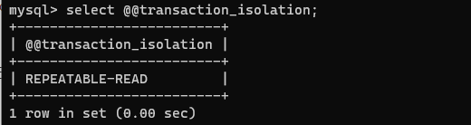
1 | update global transaction isolation REPEATABLE READ; |
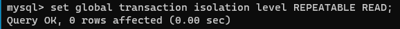
# 4.2、隔离级别
-
读未提交（READ UNCOMMITTED）
读未提交会读到另一个事务未提交的数据，产生脏读，不可重复读数据。一个事务的 update 操作可能会影响另一个事务。
如下图，可以看到第一个事务修改完后，第二个事务直接可以 select 修改后的值
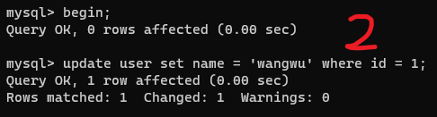
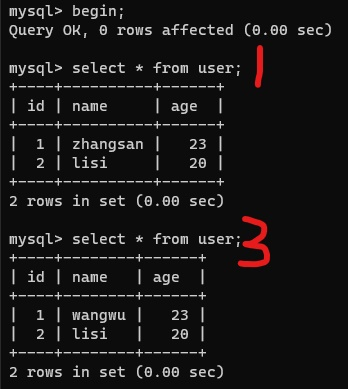
-
读提交（READ COMMITTED）
解决脏读的问题，出现不可重复读。一个事务可以读取另一个事务提交后的数据。一个事务的 update 操作可能会影响另一个事务。
如下图，可以看到第一个事务 update 后，第二个事务查询的还是原来的数据，等到第一个事务提交后，第二个事务查询的就是第一个事务修改后的数据
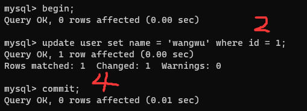
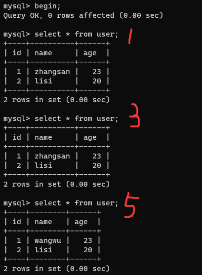
-
可重复读（REPEATABLE READ）
解决了不可重复读和脏读的问题。但是存在换读的问题（一个事务新增了一条 id=1 的数据，这时另一个事务也新增了一条 id=1 的数据并提交，第一个事务 select 时会发现不存在 id=1 的数据，报主键冲突的错误）。
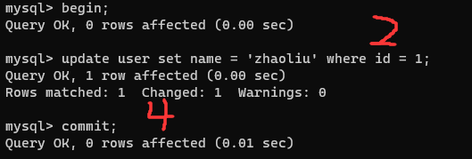
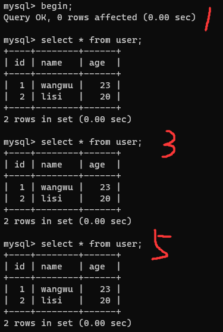
-
串行化（SERIALIZABLE）
暂无
# 五、日志（binlog）
# 5.1 使用日志进行数据还原
日志未打开，win10 在 my.ini 文件的 [mysqld] 下面添加
1 | log_bin=mysql-bin |
查找 MySQL 当前 binlog 的配置情况，第一行 ON 代表日志已经打开。
1 | show variables like '%log_bin%'; |
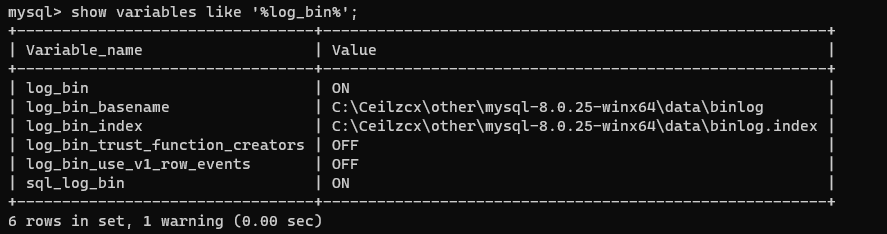
查看日志文件的使用情况（日志名称、大小 bit、是否加密）
1 | show binary logs; |
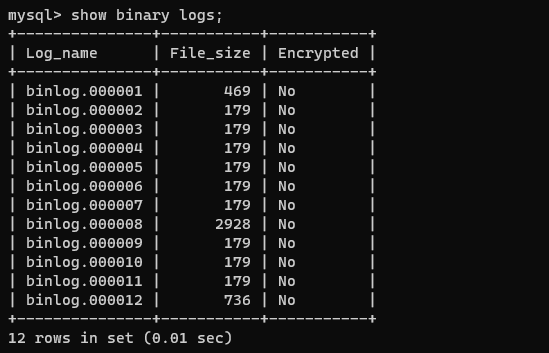
查看当前正在使用的日志情况，后续的 DDL 操作都会记录在当前日志中。
1 | show master status; |
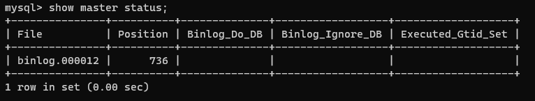
执行一些测试的 SQL 语句，可以看到创建一个数据库 test2，在数据库中创建了一张表 test，模拟不小心删除了 test2 数据库。
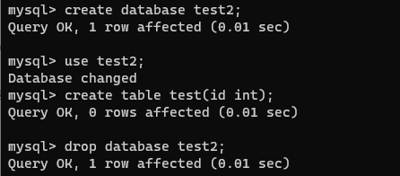
在 binlog 中查找之前执行的 SQL 语句
1 | show binlog events in 'binlog.000012'; |
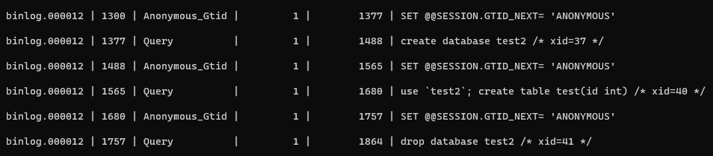
第二列的 1300… 表示所在的位置（行数），将这几行数据复制到一个 sql 文件，执行该文件即可恢复数据。
注：根据需求，可以在恢复数据的时候关闭日志。等到数据恢复后，重新打开日志
1 | set sql_log_bin=0; #临时关闭日志 |
注意这里是 shell，不是 MySQL 中执行
1 | mysqlbinlog --start-position=1300 --stop-position=1757 ./binlog.000012 >./bin.sql |
注：这里运行可能会报 unknown variable 'default-character-set=utf8' 的错误。加上运行参数 --no-default ，或者修改配置文件。
# 六、索引
# 6.1 聚簇索引
- 如果设置了主键，主键为聚簇索引
- 否则第一个 NOT NULL and UNIQUE 的字段为聚簇索引
- 默认创建一个隐藏的 row_id 为聚簇索引
聚簇索引指向（存储）的数据是行记录（页结构）
InnoDB 必须包含一个聚簇索引
# 6.2 普通索引
二级索引，非聚簇索引
叶子节点存储聚簇索引字段的值
# 6.3 回表查询
先通过普通索引的值定位聚簇索引值，再通过聚簇索引的值定位行记录数据，需要扫描两次索引 B + 树，它的性能较扫一遍索引树更低。
1 | // user表包含 id，name，age字段，其中id为主键（聚簇索引），age为普通索引 |
通过 age 的普通索引查询对应的 id，然后回表查询 id，获得对应的行（两次查询）
# 6.4 索引覆盖
只需要在一棵索引树上就能获取 SQL 所需的所有列数据，无需回表，速度快。
1 | select id, age from user where age = 20; |
如何实现覆盖索引？
-
创建联合索引
1
create index idx_age_name on user(`age`,`name`);
适用范围：全表 count、分页查询
索引结构：age 和 name 放在一个节点，和普通的 B+Tree 一致，比较大小时（最左匹配原则：先比较 age，再比较 name）
# 七、视图
作为一张虚拟表，本身不存储数据，作为一条 select 语句存储在数据字典中
简化设计，可能提高性能、也可能降低性能